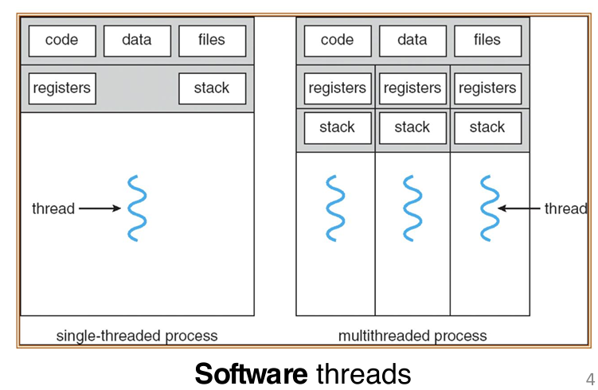
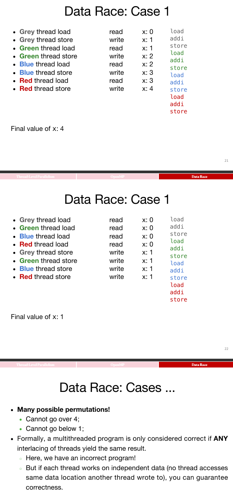

Thread-Level Parallelism
What is TLP?
Overall
-
线程的定义
-
线程（Thread）指的是执行的单一指令流，可以理解为程序执行中的最小单位。线程是进程中的一个执行流，它可以独立执行并且与其他线程并行处理。
-
一个进程可以包含多个线程，这些线程共享进程的资源（如内存、文件等）。
-
每个线程包含的内容
-
每个线程有自己的一些独特资源：
- 寄存器（Registers）：包括栈指针等，用于存储线程执行时的临时数据。
- 程序计数器（PC）：指示当前线程正在执行的指令的地址。
-
共享内存：线程之间共享堆内存（Heap）和全局变量，允许它们交换数据和通信。
-
处理器的硬件线程
-
每个处理器可以提供一个或多个硬件线程，通过多核（multi-core）或单核多线程（single-core multithreading）技术，能够同时执行多条指令流（线程）。
- 多核处理器：每个核心独立运行一个或多个线程，实现并行处理。
-
单核多线程：即使在单个处理器核心上，操作系统也能通过快速切换线程来模拟并行执行，这就是单核多线程技术。
-
程序中的线程并发执行
-
在同一个程序的进程中，线程可以并发运行。这意味着多个线程可以在同一时刻执行不同的任务，从而提高程序的效率。例如，一个线程可能在进行数据处理，另一个线程则可以处理用户输入。
-
操作系统的线程调度
-
操作系统（OS）会通过多路复用（multiplexing）将多个软件线程分配到可用的硬件线程上。换句话说，操作系统会将多个软件线程调度到不同的处理器线程上，确保程序中的各个任务可以尽可能同时执行。
-
操作系统的任务是管理和调度这些线程，确保它们能够有效地执行，并处理资源竞争、同步等问题。
-
单线程与多线程的比较
-
单线程进程：一个进程只能执行一个线程，任务顺序执行。
- 多线程进程：一个进程可以同时执行多个线程，允许并行处理多个任务，从而提高程序的执行效率。
下面的这张图片很好的展示了多线程：可以看到，原本的单线程中，也就是我们之前熟悉的流程中，一套的code data files储存，一套reg and stack；而在多线程中，依然是共用一套的code data files储存，但是每一个线程有自己的reg and stack for coordination

Fork and Join
-
Fork-Join 模型概述
-
Fork-Join 模型：一个程序或进程可以分裂成多个独立的线程（也叫子线程），这些线程理论上可以同时执行，从而实现并行处理。
- 工作原理：
- Main thread（主线程）：主线程会按顺序执行，直到第一个需要并行处理的任务区域。
- Fork（分叉）：在执行到第一个并行任务时，主线程会创建多个并行子线程来处理这些任务。
-
Join（合并）：当所有子线程完成它们的并行任务区域后，它们会进行同步，并且终止，最终只剩下主线程继续执行。
-
Fork-Join 模型的流程
-
主线程的执行：主线程首先按顺序执行，直到需要并行化的任务出现（例如，计算一个复杂任务时可以将其分解成多个部分，分别并行执行）。
- Fork 操作：主线程在到达并行任务区域时，通过fork操作将自己分裂成多个子线程。每个子线程负责执行任务的一个部分（例如图中的Parallel task I、Parallel task II和Parallel task III）。
-
Join 操作：当所有的并行子任务（Parallel task I, II, III）完成后，它们会通过Join操作进行同步（也就是等待所有子线程完成它们的任务）。一旦所有子线程执行完成，它们会终止，最终仅剩下主线程继续执行后续的操作。
-
Fork-Join 模型的图示说明
-
Main thread（主线程）：最开始执行的线程，负责启动并行任务。
- Parallel task I、II、III：表示主线程启动的并行任务区域，这些任务会由不同的子线程来执行。每个并行任务可以进一步细分为多个小任务（例如，任务A、B、C等）。这些任务会被分配到不同的子线程中进行并行执行。
- Fork 和 Join：图示中的叉子表示“Fork”操作，即主线程分裂为多个并行子线程；而Join则表示所有子线程完成并行任务后需要进行同步并合并的过程。
OS Threads
操作系统（OS）在管理线程时的关键概念，特别是线程调度和上下文切换（Context Switches）的内容：
-
操作系统（OS）线程管理的责任
-
操作系统（OS）负责管理程序中的线程，决定哪个线程在哪个CPU上运行。
-
线程管理是操作系统的重要任务之一，尤其在现代计算机中，操作系统需要确保多个线程在多个处理器核心（CPU）上被有效地分配和调度。
-
现代计算机中的线程数量与核心数量的关系
-
大多数现代计算机中，活跃的线程数远大于可用的处理核心数，因此大多数线程在任何给定时刻都是空闲的。
-
上下文切换（Context Switches）
-
上下文切换是操作系统在多线程环境下执行的一个关键操作，它允许操作系统在不同的线程之间切换，确保多个线程能在有限的处理器资源上得到执行。
-
操作系统的功能：
-
操作系统可以选择要运行的线程，并在任何时候切换到另一个线程。
- 当操作系统决定切换线程时，它会暂停当前线程的执行，将该线程的寄存器和程序计数器（PC）保存到内存中，这个过程叫做保存上下文。
这是十分最重要的内容！因为之前说了，每一个线程有自己的reg and stack，这些内容又只能由对应的processor保管和处理，因此当这个线程脱离这个processor的时候，这些内容应该保管起来
- 寄存器：保存线程运行时的临时数据，程序计数器（PC）存储当前执行的指令地址。
-
内存中的共享线程数据：来自同一程序的线程共享相同的内存空间，因此切换线程时需要确保线程数据的一致性。
-
如何切换线程
-
操作系统可以通过以下过程切换线程：
- 移除当前线程：操作系统会停止当前线程的执行，并将当前线程的寄存器值和程序计数器保存到内存中，等待后续恢复。
- 共享内存：来自同一程序的多个线程共享内存（如堆和全局变量），这使得线程切换时，线程之间的通信更加高效。
- 激活另一个线程：操作系统通过将另一个线程的寄存器加载到硬件线程的寄存器中，恢复该线程的执行。例如，当一个线程在等待网络访问或用户输入时，操作系统可以选择切换到另一个不被阻塞的线程，继续执行。
OpenMP
Overall
-
OpenMP的概述
-
OpenMP（Open Multi-Processing）是一个为多线程并行处理设计的编程语言扩展，主要用于支持共享内存并行性。
- 它通常遵循Fork-Join模型，也就是程序在某一时刻会分叉出多个线程（Fork），这些线程并行执行任务，执行完毕后再合并（Join）。
-
OpenMP适用于需要利用共享内存架构的并行计算，例如多核处理器。
-
可移植性与标准化
-
OpenMP是可移植且标准化的，这意味着你可以在不同平台上使用OpenMP，只要该平台支持OpenMP标准，它就能正常工作。不同的操作系统和编译器都可以实现这个标准，从而确保OpenMP程序能够跨平台运行。
-
易于编译
-
OpenMP编程非常简单，编译过程也很容易：
- 在代码中使用
#include <omp.h>来引入OpenMP的库。 - 使用
#pragma omp指令来指定哪些部分需要并行执行。例如，#pragma omp parallel是用来标记并行区域的指令。 -
编译时，使用
cc -fopenmp name.c命令来启用OpenMP编译，-fopenmp标志使编译器支持OpenMP扩展。 -
关键概念
-
共享变量与私有变量：
- OpenMP中的变量可以是共享的（所有线程共享同一内存空间）或者是私有的（每个线程有自己的副本）。理解这些变量的作用对并行编程至关重要，因为它关系到线程之间的数据同步和通信。
- OpenMP指令：
- 并行化与工作共享：OpenMP允许你用指令将代码分成多个并行执行的部分，使得不同的线程可以处理不同的任务。例如，
#pragma omp parallel可以使一段代码在多个线程中并行执行。 - 同步：OpenMP还提供了一些机制来管理线程之间的同步，确保不同线程在并行执行时不会发生冲突，避免出现竞争条件。
Code Example
#include <stdio.h>
#include <omp.h>
int main() {
/* Fork team of threads with private variable tid */
#pragma omp parallel
{ // Note
int tid = omp_get_thread_num(); /* get thread id */
printf("Hello World from thread = %d\n", tid);
/* Only main thread does this */
if (tid == 0) {
printf("Number of threads = %d\n", omp_get_num_threads());
}
} /* All threads join main and terminate */
return 0;
}
Note：使用了
#pragma omp parallel之后，必须使用一对括号；而且这个两个括号每个都必须单独一行！
当程序执行到 #pragma omp parallel 时，OpenMP会将这段代码的执行分配给多个线程。在默认情况下，每个线程会执行这段代码中的所有语句。
具体来说，程序在并行区域内会为每个线程创建一个执行实例（每个线程都有一份代码的副本）。每个线程独立执行同样的代码，但每个线程会有不同的线程ID（tid），这使得它们的行为可能有所不同。例如，每个线程打印它自己对应的线程ID。
OpenMP: Threads
OpenMP根据环境变量OMP_NUM_THREADS指定的值创建线程。通过设置这个环境变量，用户可以指定程序在执行时使用的线程数量。
- 例如，如果你想使用最大数量的线程，可以将这个变量设置为你希望使用的线程数。操作系统和硬件可以影响这个值。
默认线程数量：通常，OpenMP默认的线程数是物理核心数 × 每个核心的线程数。例如，如果你有6个物理核心，每个核心支持2个线程，那么OpenMP会默认创建12个线程。
- 你可以使用
lscpu命令来查看你的系统的物理核心数量以及每个核心的线程数。然后，OpenMP会根据这些信息计算线程总数。
OpenMP线程是操作系统管理的（软件）线程，这些线程会被多路复用到可用的硬件线程上。
- 操作系统会在硬件线程（如多核处理器的核心）之间分配这些软件线程，以实现并行执行。尽管硬件可能有多个核心，但操作系统会根据需要将软件线程分配给硬件线程。
几个常见的OpenMP内置函数，用于管理线程的创建、获取和线程ID。
omp_set_num_threads(x)：该函数设置程序使用的线程数。通过调用此函数，可以指定你希望OpenMP并行区域使用多少个线程。例如，omp_set_num_threads(4)表示使用4个线程。num_th = omp_get_num_threads();：这个函数返回当前并行区域中的线程总数。你可以通过调用这个函数来查询当前正在使用的线程数量。th_ID = omp_get_thread_num();：这个函数返回当前线程的线程ID。每个线程在并行执行时都有一个唯一的ID，可以用来标识不同的线程。
Shared and Private Variables in OpenMP
OpenMP中的共享变量（Shared Variables）和私有变量（Private Variables）的概念:
-
共享变量（Shared Variables）
-
共享变量是指所有线程都可以读写同一个变量。这种类型的变量在多个线程之间是共享的，因此修改该变量的值会影响到所有线程。
-
共享变量的特性：
-
声明在并行区域外的变量：如果变量在并行区域外被声明，它默认是共享的。
- 堆分配的变量：例如通过
malloc分配的内存，这类变量通常是共享的。 -
静态变量：如果变量是静态的，它也会在所有线程之间共享。
-
例如，以下代码中的
var1和var3是共享变量：
int var1, var2;
char *var3 = malloc(...);
#pragma omp parallel private(var2)
{
// var1是共享的
// var2是私有的
// var3是共享的（堆分配）
}
-
私有变量（Private Variables）
-
私有变量是指每个线程都有自己的一份副本。每个线程在执行时会使用它自己独立的副本，互不干扰。这样，多个线程可以并行地执行代码，而不会发生变量的共享冲突。
-
私有变量的特性：
-
声明在并行区域内部的变量：在
#pragma omp parallel指令块内声明的变量，默认是私有的。 -
每个线程会有独立的堆栈帧（stack frame）来存储这些私有变量的副本。
-
例如，代码中的
var2和var4是私有变量：
#pragma omp parallel private(var2)
{
int var4;
// var2 是私有的
// var4 是私有的（线程堆栈）
}
- 代码中的示例
int var1, var2;
char *var3 = malloc(...);
#pragma omp parallel private(var2)
{
int var4;
// var1 shared (默认共享)
// var2 private
// var3 shared (堆分配)
// var4 private (线程堆栈)
}
var1是共享的，因为它在并行区域外声明，并且没有显式指定为私有。var2是私有的，因为它在#pragma omp parallel中被显式指定为private。
在
private(var2)的情况下，线程会拥有var2的独立副本，修改这个副本时不会影响外部的共享变量var2
var3是共享的，因为它是堆分配的，堆内存是共享的。var4是私有的，因为它是在并行区域内声明的局部变量，并且每个线程都有自己的副本。
OpenMP Work-sharing for Syntax
#pragma omp for 指令
#pragma omp for是用于并行化for循环 的 OpenMP 指令，它告诉编译器将循环的迭代任务分配给多个线程来并行执行。- 必须放置在已经存在的并行区域内：
#pragma omp for必须放在#pragma omp parallel的并行区域中，即循环的并行化必须是在并行区域内完成的。-
如果并行区域仅包含一个
for循环， 可以将#pragma omp parallel和#pragma omp for结合起来 -
要能够成功地并行化循环，循环本身必须具有相对简单的“形状”，这是因为 OpenMP 编译器需要知道如何将循环的迭代分配给各个线程。
- 例如，迭代次数必须是明确的，OpenMP 编译器才能确定将多少迭代分配给每个线程进行并行执行。
- 必要条件：
-
循环必须是“常规的”，即没有复杂的条件语句或跳转。循环的迭代必须是线性的，可以均匀分配给各个线程。例如，
for循环的结束条件应该明确且可计算。 -
不允许在循环中提前退出，即禁止使用
break、return、exit或goto等语句。这是因为 OpenMP 在并行化时需要知道每个线程需要执行多少次迭代。如果程序在循环中提前退出，编译器将无法确定如何合理分配剩余的迭代给线程。 - 示例：如果你在并行
for循环中使用了break，OpenMP 可能无法正确分配剩余的循环任务，从而导致线程间的冲突或资源浪费。
#pragma omp parallel
{
#pragma omp for
for (int i = 0; i < LENGTH; i++) {
arr[i] = ...;
}
}
// Equivalent Style
#pragma omp parallel for
for (int i = 0; i < LENGTH; i++) {
arr[i] = ...;
}
Data Race
-
数据竞争（Data Race）
-
数据竞争发生在多个线程同时访问同一内存位置时，且至少有一个线程执行写操作。具体来说：
- 两个内存访问来自不同线程。
- 至少一个线程是写操作（即修改内存中的数据）。
- 这两个访问操作发生在彼此之后（例如，一个线程先读取变量值，另一个线程稍后写入新值，导致不同线程的操作之间没有同步，造成不确定性）。
- 线程模型：共享内存：
- 在共享内存模型中，多个线程可以访问同一块内存区域。
- 在这种情况下，当多个线程并发访问同一数据时，没有适当的同步机制（如锁、信号量等），就可能发生数据竞争。
- 非确定性：
- 由于线程调度的非确定性，不同的线程执行顺序可能不同，导致访问顺序不同，从而可能引发数据竞争。例如，线程 A 先读
x的值，然后线程 B 修改x的值，但线程 A 没有获取到更新后的值，这种情况就是数据竞争。 -
数据竞争会导致程序的执行结果不可预测，可能每次运行都产生不同的结果。
-
数据竞争与数据危害的区别
-
数据危害（Data Hazard） 是在流水线并行执行（如指令级并行）中，顺序执行的指令在并行执行时发生数据依赖。数据危害通常与处理器指令的执行顺序有关，可能会导致错误的执行结果。
- 例如，如果一个指令需要读取前一个指令的结果，但前一个指令还没有执行完毕，就会产生数据危害。
- 数据竞争与数据危害的区别：
- 数据竞争发生在并行执行时，多个线程对同一数据的访问没有同步，导致结果不确定。
-
数据危害发生在单个程序中，指令在执行时发生依赖，且没有正确的调度和同步机制来避免错误。
-
例子说明
-
在多线程编程中，可能会遇到以下代码：
int x = 0;
#pragma omp parallel
{
x = x + 1; // 多个线程同时执行这行代码
}
在这种情况下，如果没有适当的同步机制，每个线程都会读取 x 的值，增加它，然后将新值写回去。由于线程之间的执行顺序不确定，可能有一个线程读取 x 的值，而另一个线程修改了它的值，导致结果不一致，这就是一个典型的数据竞争。
Example of Data Race：

Synchronization
Why Synchronization?
-
同步的必要性
-
为了保证多线程程序的正确性，我们通常需要同步线程，也就是协调各个线程的执行。
-
同步是为了确保线程在并行执行时不会因访问共享资源而发生错误。例如，确保一个线程在写入数据后，另一个线程才可以读取这些数据。
-
线程同步的常见应用
-
最常见的同步场景是：知道某个任务什么时候完成写入，确保另一个线程读取数据时是安全的。
-
例如，线程 A 需要向某个共享变量写入数据，线程 B 需要读取该数据。为了确保线程 B 获取到正确的、最新的数据，必须确保线程 A 的写入操作在 B 的读取操作之前完成。这个过程需要通过同步来实现。
-
正确的执行顺序
-
期望的正确结果：有一系列操作：
txt
load -> addi -> store
load：从内存读取数据。add：执行加法操作。-
store：将结果存回内存。 -
在理想情况下，应该保证以下两种操作的顺序：
-
加载数据（
load）应该在执行加法操作（add）之前。 -
加法操作（
add）应该在存储结果（store）之前。 -
这四个步骤（
load、add、store）应该按照某种顺序进行执行，但由于多线程并行的特点，操作顺序可能会发生改变，导致不正确的结果。因此，执行这些操作时需要确保有正确的同步，以避免数据竞争。 -
操作顺序的多种可能性
-
理想的执行顺序是：
load->add->store，但由于多线程执行，实际上会出现这些操作的不同排列（permutation），也就是这四个操作可以有不同的执行顺序，但我们希望最终的结果是正确的。 -
Amdahl 定律
-
Amdahl 定律：如果强制执行线程之间的同步，最终的执行效果会趋近于串行执行。也就是说，虽然多线程本来能加速程序的执行，但如果过多地依赖同步，程序的并行优势就会减弱，甚至可能导致性能下降。
这句话直觉上是很有道理的
- Amdahl 定律指出，如果在并行计算中存在大量的串行部分（例如同步机制），那么并行化的整体加速效果是有限的。同步虽然保证了线程安全，但也引入了额外的开销。
Critical Sections with OpenMP
-
临界区（Critical Section）的定义
-
临界区是指一段代码，这段代码必须由单个线程在某一时刻执行，确保在同一时刻只有一个线程能够执行该段代码。
-
在多线程编程中，如果多个线程需要访问共享资源，并且这些线程的操作可能会相互干扰（例如同时修改同一变量），就需要使用临界区来确保每次只有一个线程可以执行这段代码，避免并发问题和数据竞争。
-
OpenMP中的临界区
-
在OpenMP中，你可以通过特定的指令来声明代码的临界区。
- 例如，使用
#pragma omp critical指令可以标记代码块，确保只有一个线程能够执行该部分代码。 -
这样，每个线程在执行临界区时，能够确保它是唯一执行该部分代码的线程，不会有其他线程同时进入该区域。
-
用户级别的同步
-
OpenMP的临界区机制是一种用户级别的同步机制，它依赖于硬件的同步指令来确保线程安全。
-
例如，在RISC-V等硬件架构中，硬件提供了同步指令来确保线程按正确的顺序访问共享资源。
-
相关指令
-
#pragma omp barrier：这个指令强制所有线程等待，直到所有线程都到达屏障（barrier）为止。屏障是一种同步机制，只有当所有线程都执行到屏障处，才能继续执行后续的代码。 -
#pragma omp critical：这个指令在并行代码段中创建一个临界区，确保同一时刻只有一个线程能够执行临界区中的代码。其他线程在进入临界区时会被阻塞，直到当前线程执行完毕。 -
临界区的作用
-
线程同步：临界区的目的是保证在同一时刻只有一个线程能够访问共享资源，避免不同线程同时修改同一资源时产生的竞态条件（Race Condition）。
- 性能影响：虽然临界区确保了线程安全，但它也可能影响程序性能，因为多个线程可能会在临界区内等待，导致资源利用率下降。因此，在设计并行程序时，应谨慎使用临界区，避免过多的线程阻塞。
见下面这个例子：
#include <stdio.h>
#include <omp.h>
int main() {
int x = 0; // shared variable
#pragma omp parallel
{
int tid = omp_get_thread_num(); // private variable
#pragma omp critical
{
x++;
printf("Hello World from thread = %d, x = %d\n", tid, x);
}
#pragma omp barrier
if (tid == 0) {
printf("Number of threads = %d\n", omp_get_num_threads());
}
}
return 0;
}
将会预期的是：前面首先全都是输出x的打印，并且x递增；然后当x=thread数量的时候，才会出现打印thread数量。
-
atomic instructions
-
OpenMP 会将临界区中的代码编译成原子指令（atomic instructions），这些指令支持线程间的同步。通过使用原子指令，可以保证多个线程安全地访问共享资源，避免并发问题。
-
同步确保了线程之间的操作顺序，以便不同线程在正确的时机读取和写入共享数据。
-
OpenMP 的并行限制
-
OpenMP 的并行机制具有非常严格的并行性限制，尤其是它通常只适用于循环的并行化。这意味着 OpenMP 更适合用于将程序中的循环任务并行化，以提高执行效率。
-
对于复杂的代码结构或大量的共享资源，OpenMP 的并行能力可能不足。
-
死锁（Deadlock）的风险
-
如果没有妥善地定义临界区，可能会导致死锁。死锁是指两个或多个线程在等待对方释放资源时互相阻塞，最终造成程序无法继续执行。
- 如果多个线程使用不同的锁进行同步，而这些锁没有适当的顺序或机制，可能会发生死锁，导致程序完全卡住。
Lock Synchronization
Concept
锁同步（Lock Synchronization）是实现线程同步的一种方法：
-
锁同步的概念
-
锁（Lock）用于授权一个线程进入临界区（Critical Section）。只有获得锁的线程才能访问临界区，确保在任何时刻只有一个线程能够操作临界区的资源。
-
共享内存：所有线程都需要能够访问到锁，因此通常会将锁存储在共享内存中，以便多个处理器都能访问和检查锁的状态。
-
锁的状态
-
线程会读取锁的状态，判断锁是否被占用。如果锁被占用，线程将会等待；如果锁没有被占用，线程会设置锁并进入临界区执行操作。
- 锁的状态值：
- 0：锁是“开放的/未锁定/未关闭”。
- 1：锁是“已锁定/关闭”的。
锁的状态可以通过特定的内存地址来表示
-
实现线程同步的步骤
-
检查锁：线程首先检查锁的状态。如果锁没有被占用，线程就可以进入临界区。如果锁已经被其他线程占用，线程将继续等待。
- 设置锁：当线程获得锁时，它会设置锁状态为“已锁定”（通常是设置为 1），并进入临界区执行操作。
- 执行临界区操作：线程在临界区内执行操作，通常是修改共享变量或者其他需要同步的数据。
-
释放锁：线程执行完临界区的操作后，必须释放锁，将锁的状态设置为“未锁定”（通常是设置为 0），以允许其他线程进入该临界区。
-
伪代码示例
-
以下是一个实现锁同步的伪代码：
检查锁
如果锁被占用，则等待
设置锁
执行临界区操作（例如修改共享变量）
释放锁
-
注意事项
-
锁同步确保了多个线程在执行共享资源操作时不会互相干扰，因此可以避免数据竞争（Data Race）问题。
- 然而，如果锁的粒度过大，或锁的使用不当，可能会导致性能下降。多个线程可能会因为等待锁而空闲，造成性能瓶颈。
Realization
Naive Solution
RISC-V中一种可能的实现方式：
Get_lock:
addi t1,zero,1 # t1 = 锁定值
Loop:
lw t0,0(s0) # 加载锁的状态
bne t0,zero,Loop # 如果锁已经被占用，继续等待
Lock:
sw t1,0(s0) # 锁为空闲状态，设置锁
Unlock:
sw zero,0(s0) # 释放锁，设置锁为空闲状态
这种锁的实现方式存在问题，主要体现在两个线程并发获取锁时可能会出现冲突，导致程序无法保证排他性访问。具体的问题如下：
- 线程1和线程2都尝试获取锁，它们都在各自的
Loop部分检查锁的状态。 - 假设两个线程几乎同时执行，当它们都检查到锁的状态是未被占用（即锁为 0），它们都认为自己已经获取了锁并进入临界区。
- 这种情况导致两个线程都认为自己已经设置了锁，并且都能够进入临界区，这样就没有实现对共享资源的独占访问。
Hardware
-
硬件同步的必要性
-
在并行计算中，为了避免一个线程在另一个线程的操作间隙修改共享资源的值，必须依赖硬件支持来保证同步。
-
同步的核心目标是确保在对共享内存进行读取和写入操作时，不允许其他线程在此过程中介入，以保证操作的原子性。
-
原子读/写内存操作
重要！
- 原子操作是指读写操作是不可中断的，整个操作会作为一个单独的步骤执行，不会被其他线程的操作干扰。
- 在执行原子读/写时，所有其他操作必须严格发生在读/写操作之前或之后，而不能与之重叠。这确保了内存的值在操作过程中不被更改。
-
禁止其他线程访问该内存位置，直到当前线程完成对该位置的读或写操作。这意味着，如果一个线程正在执行对某个内存位置的原子操作，其他线程不能同时访问或修改该内存位置。
-
如何在软件中实现
-
单条指令：通过原子指令实现寄存器和内存之间的交换。这类操作是硬件提供的原子操作，通常是特定的机器指令，能够保证数据交换是原子的。
- 例如，通过原子交换（atomic swap）指令，可以在不被中断的情况下将寄存器中的数据和内存中的数据交换。
- 指令对：另一种方式是使用一对指令，一条用来读取并设置锁，另一条用于写入并释放锁。通过这种方式，可以实现对内存操作的原子性。
-
第一个指令执行读操作并锁定内存位置，第二个指令执行写操作并解锁内存位置。
-
单处理器系统中的需求
-
即使是在单处理器系统中，硬件同步也是必要的。因为即使没有多核处理器，系统也可能会因中断而发生线程上下文切换。中断可能会在任意时刻发生，导致当前正在执行的线程被暂停，换成其他线程继续执行，这就需要原子操作来确保数据的一致性和安全性。
- 即使是单个处理器，线程上下文切换也可能发生，因此需要硬件提供同步机制，确保在临界区的操作不会受到中断的影响。
Two solutions in RISC-V
Read/Write Pairs
读/写对（Read/Write Pairs）
-
这种方法依赖于两个原子操作来实现同步：
-
加载保留指令（Load-Reserved，
lr）： lr rd, rs：从由rs指向的内存地址加载一个双字（word）到寄存器rd中，并为硬件线程注册一个保留。- 条件存储指令（Store-Conditional，
sc）： sc rd, rs1, rs2：只有在先前的lr指令所保留的内存地址没有被修改时，sc才会将寄存器rs2的值存储到rs1所指向的内存位置。sc指令会返回一个状态到rd，如果内存位置未发生改变（即保留仍然有效），则返回成功，否则返回失败。-
sc的执行成功与否取决于在lr和sc之间的内存地址没有被其他线程修改。 -
问题：
-
这两个指令结合使用时，通过
lr和sc实现了一个基本的锁操作，但如果有其他线程在lr和sc之间修改了内存位置，sc会失败。 -
示例：
-
原子交换（用于测试/设置锁变量）：
try: lr t1, s1 # load reserved sc t0, s1, s4 # store conditional bne t0, x0, try # 如果 sc 失败，重新尝试 add s4, x0, t1 # 将值加载到 s4 -
lr指令加载锁状态，sc指令尝试修改锁的值。如果在lr和sc之间，其他线程修改了锁的值，sc会失败，程序会重试。 -
测试与设置（Test-and-Set）
其实就是一种操作的paradigm

Atomic Memory Operations (AMOs)
-
RISC-V 原子内存操作（AMOs）
-
原子内存操作（AMO）：原子内存操作允许在内存和寄存器之间执行一个原子的操作，即在操作过程中不会被中断或干扰。
- 指令格式：AMOs 在 RISC-V 中通过 R 类型指令格式实现，常见的操作包括：
AMOSWAP rd, rs2, (rs1)：原子交换，rd会接收rs1指向的内存位置的旧值，而rs2的值会被写入到该位置。AMOADD rd, rs2, (rs1)：原子加法，rs1指向的内存值会与rs2相加，结果存回该内存地址，并将旧值存入rd。- 操作过程：
- 通过 AMOs 指令，可以将寄存器中的值与内存中的值进行原子操作。
-
AMOs 确保对内存的修改操作是原子的，不会被其他线程或操作打断。
-
原子交换（Atomic Swap）作为基础操作
-
这种方法提供了 原子交换（Atomic Swap）作为基础操作，允许在内存和寄存器之间交换数据。
-
除了原子交换，AMOs 还支持许多常见的归约操作（例如加法、最大值、最小值等），这些操作在并行程序中是非常有用的，并且能够高效地实现。
-
AMO 示例：锁的实现
# 假设锁存储在内存位置 a0
li t0, 1 # 将 1 加载到寄存器 t0，用于设置锁
Try:
amoswap.w.aq t1, t0, (a0) # 执行原子交换，将 t0 的值（1）写入 a0 指向的内存位置，并将该位置的旧值存入 t1
bnez t1, Try # 如果 t1 非零，表示锁已被占用，跳转到 Try 重试
# 锁成功获取，可以进入临界区，进行共享数据的访问操作
# 临界区操作代码在此处编写
amoswap.w.rl x0, x0, (a0) # 释放锁，将 0 存回 a0 指向的内存位置，表示释放锁
- 假设锁存储在内存位置
a0中（这意味着锁的状态保存在a0所指向的内存地址）。 - 锁的值为
1时表示锁已经设置（即线程持有锁），值为0时表示锁处于“空闲”状态（即初始状态或未被任何线程占用）。
锁获取和释放过程：
- 获取锁：
li t0, 1：将1加载到寄存器t0，用于设置锁。amoswap.w.aq t1, t0, (a0)：使用AMOSWAP指令将t0的值（即1）写入a0指向的内存位置，并将该内存位置的旧值（锁的状态）加载到t1。bnez t1, Try：如果t1的值为非零（即锁已经被设置，值为1），则跳转到Try标签，重试获取锁。这是因为amoswap.w.aq会返回锁的旧值，如果该值为1，说明锁已经被占用，当前线程需要重试。… critical section goes here …：如果成功获取到锁，线程就可以进入临界区执行操作。- 释放锁：
amoswap.w.rl x0, x0, (a0)：使用AMOSWAP指令将0存回a0指向的内存位置，表示释放锁。这里使用x0作为寄存器，它的值是0，表示释放锁。
在 RISC-V 架构中，
.aq和.rl是原子内存操作（AMO）指令的一部分，它们用于确保指令执行的原子性。这两个后缀代表了不同的操作模式，分别用于获取锁（acquire）和释放锁（release）。